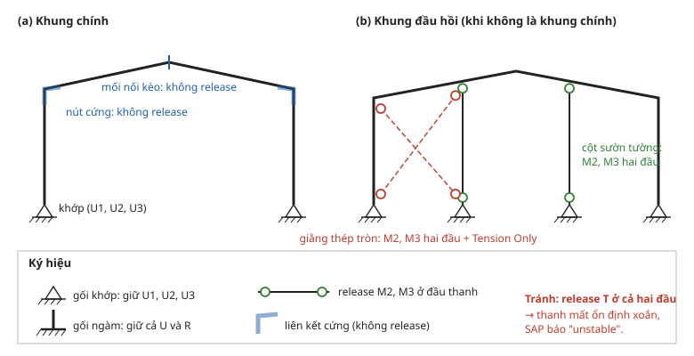

Bài 3.2. Liên kết, release, điều kiện biên End releases and supports
Release quyết định thanh nào nhận mô men. Release đúng giúp mô hình sát sơ đồ thiết kế; release thừa làm mô hình mất ổn định.
- Gán release theo quy ước Bảng 3.1 cho kèo, cột sườn tường, thanh chống, giằng.
- Nhận biết và sửa các nguyên nhân gây báo "Structure is unstable".
1. Tình huống
Mô hình nhà xưởng Hòa Bình chạy xong nhưng Analysis Log báo "Structure is unstable or ill-conditioned". Chạy Modal, mode 1 có chu kỳ 38 s và chỉ một thanh chống dọc nhà dao động. Nguyên nhân: thanh chống được giải phóng M2, M3 và T ở cả hai đầu.
2. Nội dung chính
Giải phóng liên kết (Releases)
Assign → Frame → Releases/Partial Fixity. Quy ước trong nhà xưởng:
| Cấu kiện | Release tại hai đầu | Ghi chú |
|---|---|---|
| Kèo – cột, mối nối kèo | Không | Liên kết cứng (mặt bích) |
| Cột sườn tường, kèo đầu hồi (khi không là khung chính) | M2, M3 hai đầu (hoặc chỉ M3) | Tránh nhận mô men từ khung chính |
| Thanh chống, xà gồ (nếu mô hình) | M2, M3 hai đầu; T một đầu | Khớp hai đầu |
| Giằng thép tròn | M2, M3 hai đầu | Kèm Tension Only |
Bảng 3.1. Release thường dùng
Mô hình bị "không ổn định" (Instability). Nguyên nhân phổ biến:
- Giải phóng T (xoắn) ở cả hai đầu một thanh.
- Giải phóng M2, M3 cả hai đầu của một chuỗi thanh nối với nhau tại nút không có thanh liên tục nào giữ.
- Khung đầu hồi khớp hoàn toàn mà không có giằng.
SAP2000 sẽ báo "Structure is unstable or ill-conditioned" trong Analysis Log. Kiểm tra bằng chạy Modal: mode đầu tiên có chu kỳ rất lớn (> 10 s) hoặc chỉ có một thanh dao động là dấu hiệu mất ổn định cục bộ.
3. Thực hành SAP2000
- Chọn nhóm
THANH_CHONG, Assign → Frame → Releases/Partial Fixity. - Tích Moment 22 và Moment 33 ở Start và End; tích Torsion chỉ ở Start.
- Display Options → Releases để thấy các chấm khớp; chạy lại Modal kiểm tra.

4. Lỗi thường gặp
- Giải phóng T ở cả hai đầu thanh: thanh quay tự do quanh trục của nó.
- Khớp hoàn toàn khung đầu hồi nhưng chưa vẽ giằng: hệ biến hình.
5. Luyện tập
Release nào sau đây chắc chắn làm thanh bị mất ổn định cục bộ?
Gợi ý
Thanh có còn gì giữ nó quay quanh trục 1 không?
Lời giải
Giải phóng T ở hai đầu → thanh tự quay quanh trục dọc → SAP báo mất ổn định.
Cột sườn tường đầu hồi (không thuộc khung chính) nên gán release thế nào?
Gợi ý
Xem Bảng 3.1.
Lời giải
Cột sườn tường: M2, M3 hai đầu (hoặc chỉ M3); tránh nhận mô men từ khung chính.
Giằng thép tròn D20 được gán release M2, M3 hai đầu và Tension Only. Thanh chống D114×4 cùng khoang gán M2, M3, T hai đầu. Chạy Modal thấy mode 1 có chu kỳ 40 s, chỉ thanh chống dao động. Sửa thế nào?
Gợi ý
Quy ước Bảng 3.1 cho thanh chống: "T một đầu".
Lời giải
Chu kỳ rất lớn với một thanh dao động là mất ổn định cục bộ do release T hai đầu; chỉ giải phóng T ở một đầu.
- Kèo – cột: không release (mặt bích cứng). Cột sườn tường: M2, M3 hoặc M3.
- Thanh chống: M2, M3 hai đầu, T một đầu. Giằng: M2, M3 hai đầu + Tension Only.
- Mode 1 > 10 s hoặc chỉ một thanh dao động → mất ổn định cục bộ.